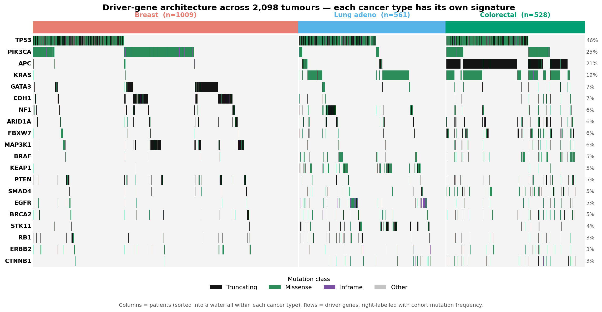
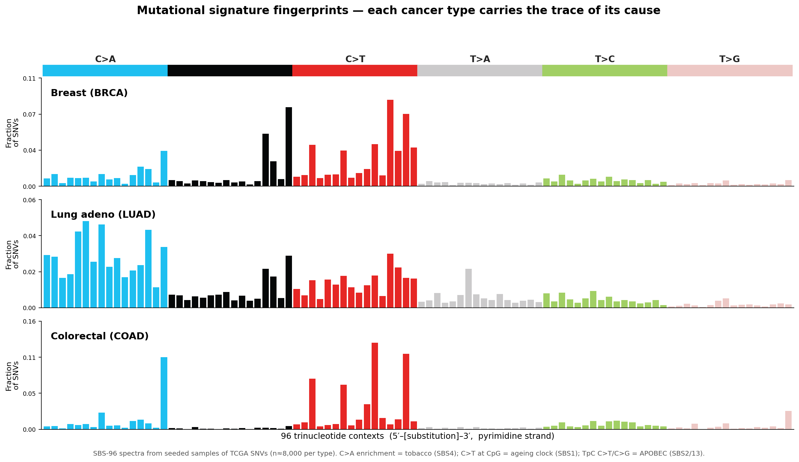
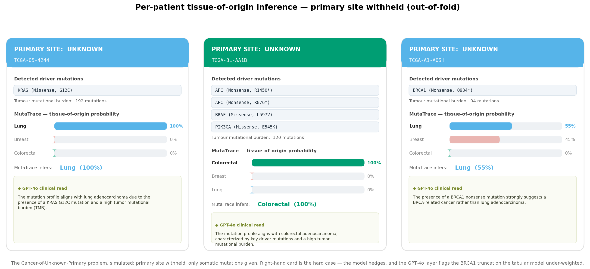
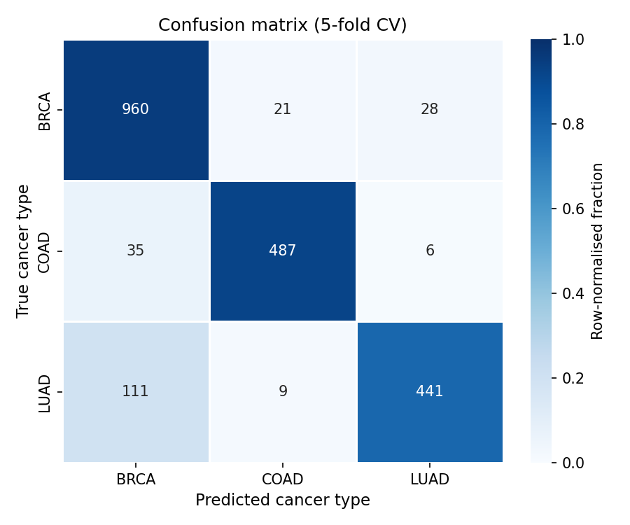

When a cancer is found but its origin is not, treatment stalls. MutaTrace infers a tumour's tissue of origin from its somatic mutations alone — no imaging, no histology — at 90% accuracy across breast, lung, and colorectal cancer.
This is Cancer of Unknown Primary (CUP). Because nearly every therapy is chosen by tissue of origin, these patients are treated half-blind — and CUP carries among the worst outcomes in oncology. The one datum always in hand is the tumour's DNA. MutaTrace turns that DNA into an answer.
The substrate is the TCGA PanCancer Atlas — de-identified whole-exome somatic mutations from real patient tumours, pulled live from the cBioPortal public API. Nothing here is simulated.
Every figure on this page is produced by a numbered script in the public repo, from that one API — reproducible end-to-end with python scripts/01…08.
MutaTrace reads that record on three independent axes, then fuses them into one prediction per patient.
Which cancer genes are mutated. Each tissue carries its own driver signature — the strongest single discriminator.
The trinucleotide context of every point mutation encodes its cause — tobacco, APOBEC, an ageing clock — as the SBS-96 barcode.
DNABERT encodes 129 bp around each driver mutation, capturing local sequence grammar that gene names and signatures miss.



Five-fold stratified cross-validation on 2,098 patients. The signal in somatic mutations is strong enough to place a tumour to its tissue without any clinical, imaging, or expression data.

Cancer tissue-of-origin classification is a well-established problem with a body of prior work. MutaTrace makes no novelty claim — its value is a clean, interpretable, fully reproducible end-to-end build on public data, not a new method.
No leakage in the demo. Tumor GPS probabilities are out-of-fold — each patient scored by a model that never trained on them.
Curated drivers. TTN and MUC16 excluded — long genes that masquerade as drivers by mutation count.
Interpretable by construction. SHAP attributes every call to genes and signatures; GPT-4o writes the clinical rationale.
Real patient tumours. TCGA PanCancer Atlas, de-identified and public — not simulated data.
Three tissues, not thirty-three. A proof of concept; the architecture is class-agnostic and extends to the full TCGA panel.
Mutations only. Adding copy-number, expression, and methylation — and an independent hold-out cohort — is the path to clinical grade.